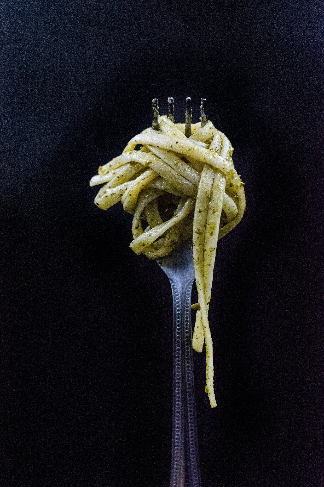

Welcome to ● NO WASTE ●. An app for restaurants to find out what foods and ingredients local food banks need. Here in the UK we don't like to waste food that can help those in need. Cities like Bedford, London, and Notting Hill are teaming with food banks happy to take on extra ingrediants or meals
| Name | Location | Food Needed |
|---|